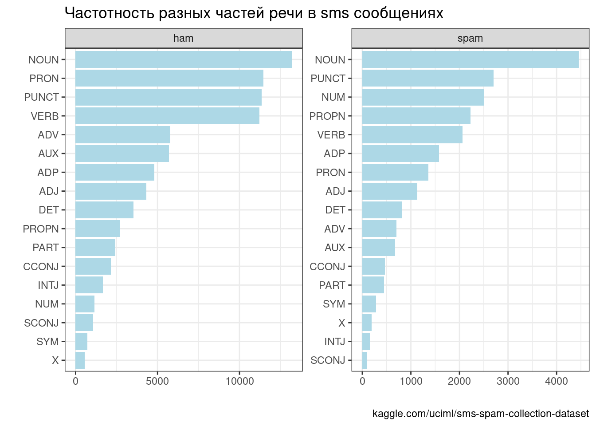
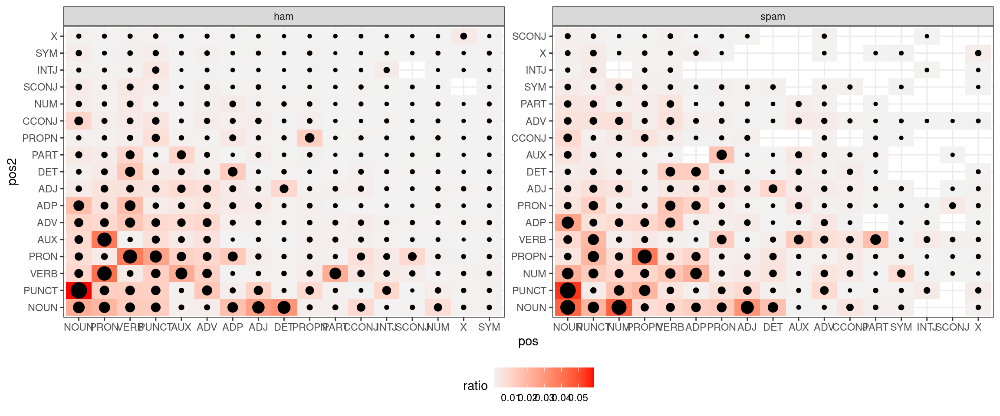
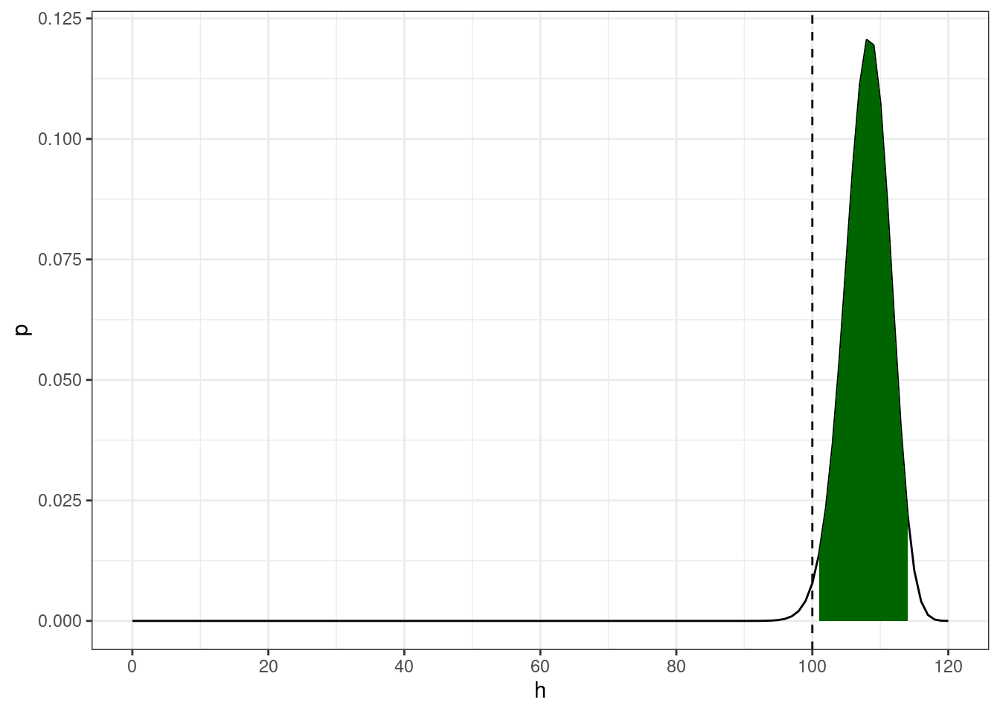
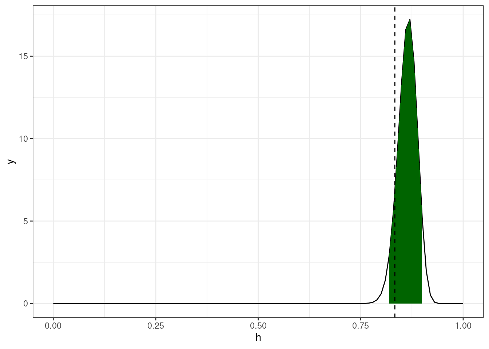
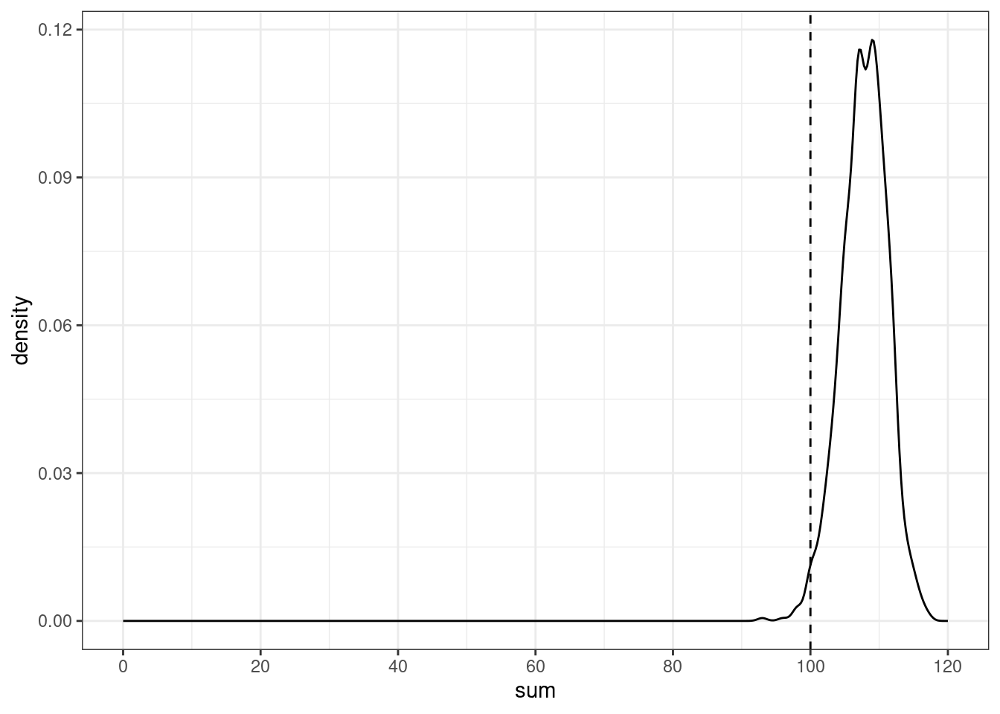
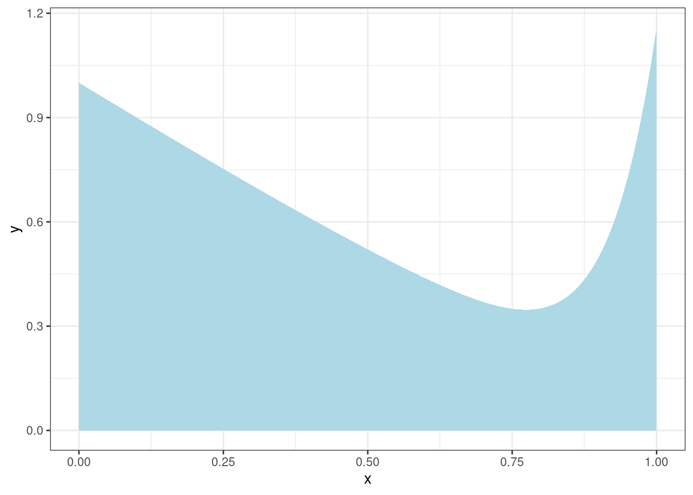
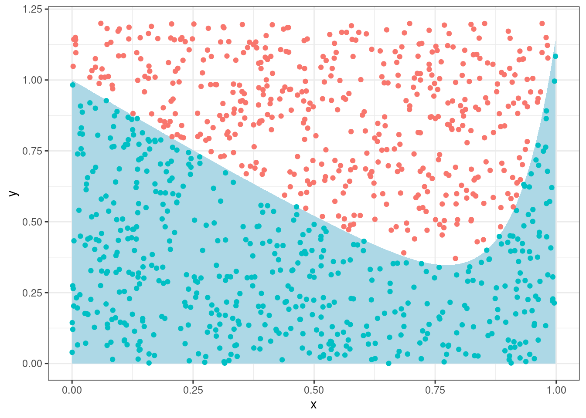
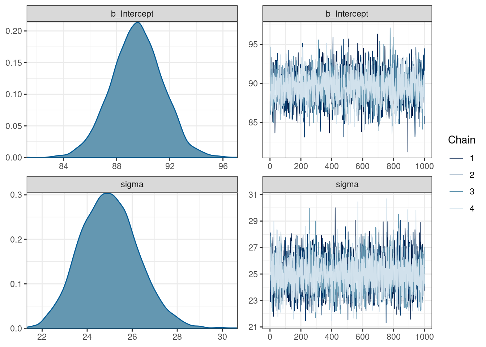
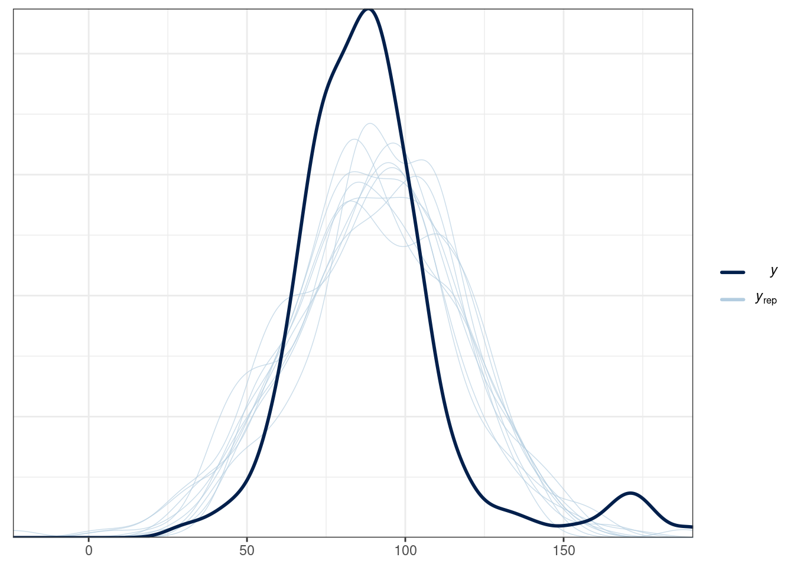

9 Введение в Марковские цепи Монте-Карло
library(tidyverse)Марковская цепь Монте-Карло (Markov chain Monte Carlo, MCMC) — это класс алгоритмов для семплирования, которые позволяют моделировать некоторое распределение вероятностей. При моделировании используют разные алгоритмы, мы будем смотреть на примере алгоритма Метрополиса-Гастингса (Metropolis-Hastings).
Для того, чтобы в этом разобраться нам потребуется обсудить:
- метод Монте-Карло;
- марковские цепи;
- алгоритма Метрополиса-Гастингса.
9.1 Марковские цепи
Марковский процесс
- конечное количество состояний
- вероятность переходов из одного состояния в другое
Возьмем наш датасет с sms и посмотрим частоты разных частей речи::

Теперь давайте посмотрим на частотность переходов из одних состояний в другие:

Иногда это визуализируют при помощи графов, но в нашем случае (это граф ham) это достаточно бесполезно (наводите на вершины стрелочки, чтобы что-то разглядеть):
Можно посмотреть на славную визуализацию (спасибо за ссылку Марине Дубовой).
9.2 Хакерская статистика (основано на “Статистика для хакеров” Джейка Вандерпласа)
Вообще симуляции позволяют делать статистику более осмысленной.
9.2.1 Биномиальные данные
Немного упрощая данные из статьи (Rosenbach 2003: 394), можно сказать что носители британского английского предпочитают s-генитив (90%) of-генитиву (10%). Можно ли сказать, что перед Вами носитель британского английского, если Вы наблюдаете в интервью актера из 120 контекстов 100 s-генитивов?
Вероятность получить 100 успехов из 120 случаев, если мы верим, что вероятность успеха равна 0.9 описывается биномиальным распределением:
\[P(H = h|p, n) = \binom{n}{h}\times p^h\times(1-p)^{1-h}\]
Фреквентистский подход: биномиальный тест
- H\(_0\) человек говорит s-генитив с вероятностью 0.9
- α = 0.05

Байесовский подход: биномиальная функция правдоподобия перемножается с априорным бета распределением чтобы получить апостериорное распределение.
tibble(h = seq(0, 1, 0.01),
y = dbeta(h, shape1 = 100 + 90, shape2 = 20 + 10)) %>%
ggplot(aes(h, y))+
geom_line()+
geom_area(aes(x = ifelse(h>=qbeta(0.025, shape1 = 100 + 90, shape2 = 20 + 10) &
h<=qbeta(0.975, shape1 = 100 + 90, shape2 = 20 + 10), h, NA)), fill = "darkgreen")+
geom_vline(xintercept = 100/120, linetype = 2)
Хакерский подход: симуляция:
set.seed(42)
map_dbl(1:1000, function(i){
sample(0:1, 120, replace = TRUE, prob = c(0.1, 0.9)) %>%
sum()
}) ->
simulations
tibble(sum = simulations) %>%
mutate(greater = sum <= 100) %>%
group_by(greater) %>%
summarise(number = n())tibble(sum = simulations) %>%
ggplot(aes(sum))+
geom_density()+
geom_vline(xintercept = 100, linetype = 2)+
scale_x_continuous(breaks = c(0:9*20), limits = c(0, 120))
Аналогично можно использовать:
- случайное перемешивание вместо двухвыборочного t-теста;
- бутстрэп вместо одновыборочного t-теста.
9.2.2 Метод Монте-Карло
Группа методов изучения случайных процессов, которые базируются на:
- возможности производить бесконечного количества случайных значений
- для известных или новых распределений
Представим себе, что у нас есть какой-то интеграл, который мы хотим посчитать. Например такой:
tibble(x = seq(0, 1, length.out = 1000)) %>%
ggplot(aes(x))+
stat_function(fun = function(x){x^12-sin(x)+1}, geom = "area", fill = "lightblue")
Мы можем насэмплировать точек из комбинации двух унимодальных распределений u(0, 1), и u(0, 1.2) и посмотреть, кто попадает в область, а кто нет:
set.seed(42)
tibble(x = runif(1e3, 0, 1),
y = runif(1e3, 0, 1.2),
in_area = y < x^12-sin(x)+1) %>%
ggplot(aes(x, y))+
stat_function(fun = function(x){x^12-sin(x)+1}, geom = "area", fill = "lightblue")+
geom_point(aes(color = in_area), show.legend = FALSE)
Сколько попало?
set.seed(42)
tibble(x = runif(1e3, 0, 1),
y = runif(1e3, 0, 1.2),
in_area = y < x^12-sin(x)+1) %>%
count(in_area)528/1000*1.2[1] 0.6336integrate(function(x){x^12-sin(x)+1}, 0, 1)0.6172254 with absolute error < 0.0000000000000069А если увеличить количество наблюдений?
set.seed(42)
tibble(x = runif(1e7, 0, 1),
y = runif(1e7, 0, 1.2),
in_area = y < x^12-sin(x)+1) %>%
count(in_area)5143667/10000000*1.2[1] 0.61724integrate(function(x){x^12-sin(x)+1}, 0, 1)0.6172254 with absolute error < 0.00000000000000699.3 Соединение идей Марковских цепей и Монте-Карло
shiny::runGitHub("agricolamz/mcmc_shiny")Основные проблемы MCMC:
- Зависимость от начального значения. Решение: выкинуть начальную часть цепи (burn-in).
- Полученные значения автокоррелируют, так как они были получины при помощи марковского процесса. Решение: брать, например, каждое третье значение.
Вы можете почитать историю идей MCMC в работе (Robert and Casella 2011) (доступна здесь).
9.4 brms
Для вычисления всяких сложных статистических моделей люди придумали вероятностные языки программирования. Чаще всего они являются расширением для стандартных языков программирования, но иногда становятся самодостаточными языками (однако они все равно написаны на каких-то быстрых языках программирования типа C++). Примерами таких самодостаточных языков является:
- BUGS (Bayesian inference Using Gibbs Sampling)
- JAGS (Just Another Gibbs Sampler)
- NIMBLE
- NUTS (No-U-Turn-Sampler)
- Stan
Для них пишут обертки на разных языках, мы будем использовать пакет brms, который является оберткой над пакетом rstan, который является оберткой для Stan. Вы можете установить эти пакеты к себе на компьютер, но есть высокая вероятность, что что-то пойдет не так, в связи с чем, я предлагаю всем использовать rstudio.cloud для примеров на brms.
Чтобы повторить примеры Вам нужно:
- Установить на свой компьютер
rstan(инструкции) иbrms
Если на вашем компьютере не выходит, попробуйте <rstudio.cloud>
9.4.1 Регрессионный пример
В работе (Coretta 2016) собраны данные
длительности исландских гласных. Отфильтруйте данные, произнесенные
носителем tt01 (переменная speaker), и
смоделируйте длительность гласных (переменная vowel.dur)
нормальным распределением используя в качестве априорного распределения
нормальное распределение со средним 275 и стандартным отклонением 65
(основано на (Hillenbrand et al. 1995)).
read_csv("https://raw.githubusercontent.com/agricolamz/2022_da4l/master/data/Coretta_2017_icelandic.csv") %>%
filter(speaker == "tt01") ->
vowel_dataВ качестве первого этапа стоит сформулировать модель и посмотреть, в какой форме от нас ожидают априорное распределение.
library(brms)
get_prior(vowel.dur ~ 0 + Intercept,
family = "normal",
data = vowel_data)Сделаем нашу первую модель:
normal_fit <- brm(vowel.dur ~ 0 + Intercept,
family = "normal",
data = vowel_data,
prior = c(prior(normal(275, 65), coef = Intercept)),
silent = TRUE)
SAMPLING FOR MODEL 'f8620c31edb9ae4be8203def3fec2653' NOW (CHAIN 1).
Chain 1:
Chain 1: Gradient evaluation took 1e-05 seconds
Chain 1: 1000 transitions using 10 leapfrog steps per transition would take 0.1 seconds.
Chain 1: Adjust your expectations accordingly!
Chain 1:
Chain 1:
Chain 1: Iteration: 1 / 2000 [ 0%] (Warmup)
Chain 1: Iteration: 200 / 2000 [ 10%] (Warmup)
Chain 1: Iteration: 400 / 2000 [ 20%] (Warmup)
Chain 1: Iteration: 600 / 2000 [ 30%] (Warmup)
Chain 1: Iteration: 800 / 2000 [ 40%] (Warmup)
Chain 1: Iteration: 1000 / 2000 [ 50%] (Warmup)
Chain 1: Iteration: 1001 / 2000 [ 50%] (Sampling)
Chain 1: Iteration: 1200 / 2000 [ 60%] (Sampling)
Chain 1: Iteration: 1400 / 2000 [ 70%] (Sampling)
Chain 1: Iteration: 1600 / 2000 [ 80%] (Sampling)
Chain 1: Iteration: 1800 / 2000 [ 90%] (Sampling)
Chain 1: Iteration: 2000 / 2000 [100%] (Sampling)
Chain 1:
Chain 1: Elapsed Time: 0.01396 seconds (Warm-up)
Chain 1: 0.009019 seconds (Sampling)
Chain 1: 0.022979 seconds (Total)
Chain 1:
SAMPLING FOR MODEL 'f8620c31edb9ae4be8203def3fec2653' NOW (CHAIN 2).
Chain 2:
Chain 2: Gradient evaluation took 5e-06 seconds
Chain 2: 1000 transitions using 10 leapfrog steps per transition would take 0.05 seconds.
Chain 2: Adjust your expectations accordingly!
Chain 2:
Chain 2:
Chain 2: Iteration: 1 / 2000 [ 0%] (Warmup)
Chain 2: Iteration: 200 / 2000 [ 10%] (Warmup)
Chain 2: Iteration: 400 / 2000 [ 20%] (Warmup)
Chain 2: Iteration: 600 / 2000 [ 30%] (Warmup)
Chain 2: Iteration: 800 / 2000 [ 40%] (Warmup)
Chain 2: Iteration: 1000 / 2000 [ 50%] (Warmup)
Chain 2: Iteration: 1001 / 2000 [ 50%] (Sampling)
Chain 2: Iteration: 1200 / 2000 [ 60%] (Sampling)
Chain 2: Iteration: 1400 / 2000 [ 70%] (Sampling)
Chain 2: Iteration: 1600 / 2000 [ 80%] (Sampling)
Chain 2: Iteration: 1800 / 2000 [ 90%] (Sampling)
Chain 2: Iteration: 2000 / 2000 [100%] (Sampling)
Chain 2:
Chain 2: Elapsed Time: 0.013054 seconds (Warm-up)
Chain 2: 0.009854 seconds (Sampling)
Chain 2: 0.022908 seconds (Total)
Chain 2:
SAMPLING FOR MODEL 'f8620c31edb9ae4be8203def3fec2653' NOW (CHAIN 3).
Chain 3:
Chain 3: Gradient evaluation took 4e-06 seconds
Chain 3: 1000 transitions using 10 leapfrog steps per transition would take 0.04 seconds.
Chain 3: Adjust your expectations accordingly!
Chain 3:
Chain 3:
Chain 3: Iteration: 1 / 2000 [ 0%] (Warmup)
Chain 3: Iteration: 200 / 2000 [ 10%] (Warmup)
Chain 3: Iteration: 400 / 2000 [ 20%] (Warmup)
Chain 3: Iteration: 600 / 2000 [ 30%] (Warmup)
Chain 3: Iteration: 800 / 2000 [ 40%] (Warmup)
Chain 3: Iteration: 1000 / 2000 [ 50%] (Warmup)
Chain 3: Iteration: 1001 / 2000 [ 50%] (Sampling)
Chain 3: Iteration: 1200 / 2000 [ 60%] (Sampling)
Chain 3: Iteration: 1400 / 2000 [ 70%] (Sampling)
Chain 3: Iteration: 1600 / 2000 [ 80%] (Sampling)
Chain 3: Iteration: 1800 / 2000 [ 90%] (Sampling)
Chain 3: Iteration: 2000 / 2000 [100%] (Sampling)
Chain 3:
Chain 3: Elapsed Time: 0.012447 seconds (Warm-up)
Chain 3: 0.010284 seconds (Sampling)
Chain 3: 0.022731 seconds (Total)
Chain 3:
SAMPLING FOR MODEL 'f8620c31edb9ae4be8203def3fec2653' NOW (CHAIN 4).
Chain 4:
Chain 4: Gradient evaluation took 4e-06 seconds
Chain 4: 1000 transitions using 10 leapfrog steps per transition would take 0.04 seconds.
Chain 4: Adjust your expectations accordingly!
Chain 4:
Chain 4:
Chain 4: Iteration: 1 / 2000 [ 0%] (Warmup)
Chain 4: Iteration: 200 / 2000 [ 10%] (Warmup)
Chain 4: Iteration: 400 / 2000 [ 20%] (Warmup)
Chain 4: Iteration: 600 / 2000 [ 30%] (Warmup)
Chain 4: Iteration: 800 / 2000 [ 40%] (Warmup)
Chain 4: Iteration: 1000 / 2000 [ 50%] (Warmup)
Chain 4: Iteration: 1001 / 2000 [ 50%] (Sampling)
Chain 4: Iteration: 1200 / 2000 [ 60%] (Sampling)
Chain 4: Iteration: 1400 / 2000 [ 70%] (Sampling)
Chain 4: Iteration: 1600 / 2000 [ 80%] (Sampling)
Chain 4: Iteration: 1800 / 2000 [ 90%] (Sampling)
Chain 4: Iteration: 2000 / 2000 [100%] (Sampling)
Chain 4:
Chain 4: Elapsed Time: 0.011714 seconds (Warm-up)
Chain 4: 0.009651 seconds (Sampling)
Chain 4: 0.021365 seconds (Total)
Chain 4: normal_fit Family: gaussian
Links: mu = identity; sigma = identity
Formula: vowel.dur ~ 0 + Intercept
Data: vowel_data (Number of observations: 175)
Draws: 4 chains, each with iter = 2000; warmup = 1000; thin = 1;
total post-warmup draws = 4000
Population-Level Effects:
Estimate Est.Error l-95% CI u-95% CI Rhat Bulk_ESS Tail_ESS
Intercept 89.53 1.93 85.76 93.26 1.00 3155 2162
Family Specific Parameters:
Estimate Est.Error l-95% CI u-95% CI Rhat Bulk_ESS Tail_ESS
sigma 24.98 1.28 22.62 27.60 1.00 4167 3039
Draws were sampled using sampling(NUTS). For each parameter, Bulk_ESS
and Tail_ESS are effective sample size measures, and Rhat is the potential
scale reduction factor on split chains (at convergence, Rhat = 1).Визуализируем нашу модель:
plot(normal_fit)
После того как мы сгенерировали наши распределения, мы можем их достать и что-нибудь посчитать:
as_draws_array(normal_fit) %>%
posterior::summarize_draws()as_draws_rvars(normal_fit)# A draws_rvars: 1000 iterations, 4 chains, and 3 variables
$b_Intercept: rvar<1000,4>[1] mean ± sd:
[1] 90 ± 1.9
$sigma: rvar<1000,4>[1] mean ± sd:
[1] 25 ± 1.3
$lp__: rvar<1000,4>[1] mean ± sd:
[1] -822 ± 0.99 Можно визуально оценить, где лежат наши данные, а что предсказывает полученная модель:
pp_check(normal_fit)